IDE preferences management is done via the Preferences dialog. Select Window > Preferences in the main menu to open this dialog.
The great number of preferences is supported for the IDE. Preferences are split into groups which are displayed on separate pages. Preference pages in turn are combined into the hierarchial structure displayed in the left pane of the dialog. In the upper part of the dialog filter text field is located which allows quick search of the particular page.
Press the Apply button to apply changes and continue the preferences edit. To aply changes and close dialog press OK button. Restore Defaults button resets preferences to their defaults.
Modula-2 specific preferences are located in the Preferences dialog on the XDS Modula-2 page and on the pages below:
Console preferences are located in the Preferences dialog on the XDS Modula-2 > Console.
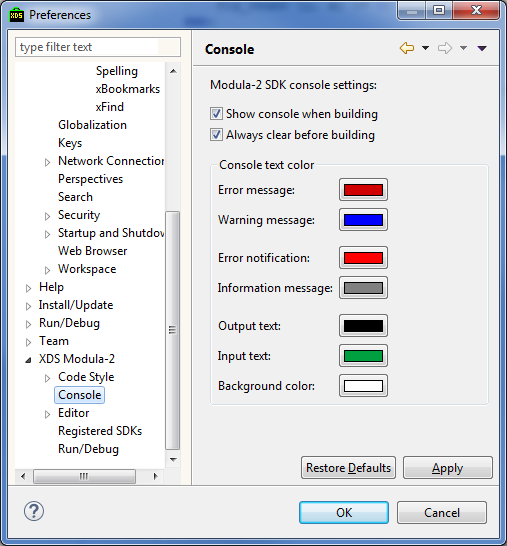
In the upper part of the dialog there are two checkboxes:
Console text color page specify color key for the various message types, text and background coloring. The color list is as follows:
To change color left click on the corresponding rectangle then select preferred color in the standard color selection dialog and press the OK color.
Modula-2 editor preferences are located in the Preferences dialog on the XDS Modula-2 > Editor and on pages below:
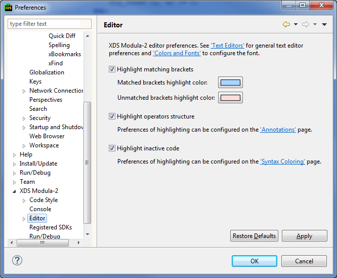
By checking Highlight matching brackets it is then possible to specify what colors should be used to highlight matched and unmatched brackets (brackets, parenthesis and angle brackets) in the code. The colors being specified:
Highlight operators structure checkbox turns on token highlighting for the tokens belonging to the same language construct. Highlight color is specified in the Operators structure highlight color.
Highlight inactive code checkbox turns on highlighting of the code excluded by the compiler pragmas. Highlight color is specified on the Syntax Coloring page.
To change the text editor font size go to the page General > Appearance > Colors and Fonts
, select Basic > Text Font and press the Edit... button.
The page XDS Modula-2 > Editor > Indent Guides contains preferences for the indent guide display.
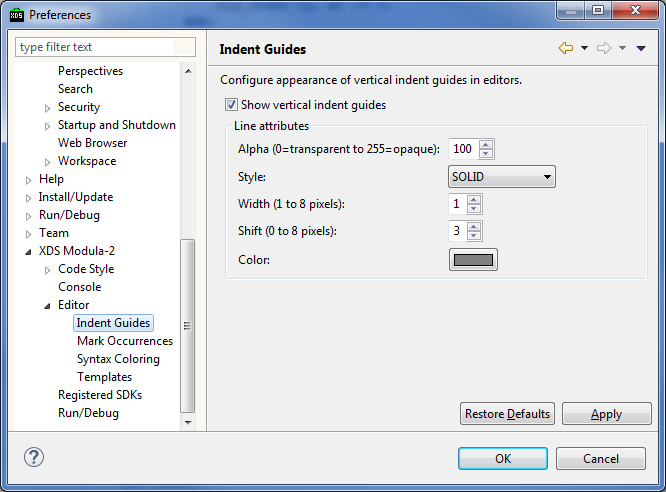
Indent guides are vertical lines displaying the program code structure, see the picture:
Indent guide display can be turned off by the checkbox Show vertical indent guides.
The following parameters can be specified:
The page XDS Modula-2 > Editor > Syntax Coloring allows to specify colors and stylings employed in
Modula-2 syntax coloring.
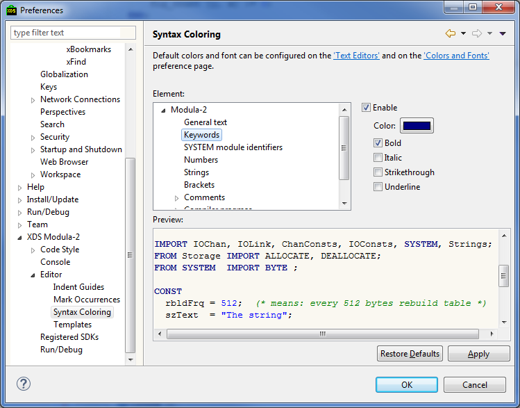
The page Element allows to specify the type for which the higlighting is performed. To the right is possible to enable Enable highlighting (if is not checked then the given highlighting is saved in the system but is not applied). Also, the following stylings can be specified:
In the page Preview it is possible to see the preview of the code corresponding to the parameters specified.
The section XDS Modula-2 > Editor > Templates allows to setup the code templates.

To add the new template press New... button at the dialog right.
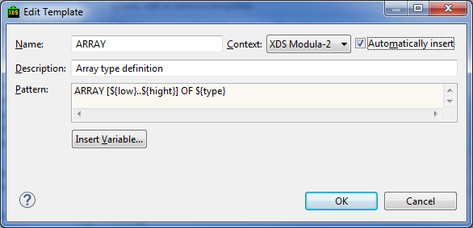
In the opened dialog specify the folllowing:
Last field also allows usage of so called variables. Variable list can be opened by pressing the button Insert Variable....
Template is commited to the list by pressing the OK button.
To edit the template press the Edit... button. To delete the template press the Remove button. To revert the deleted template press the Restore Removed button.
To reset the template list to defaults press the Revert to Default button.
Templates can be imported from the *.xml file by pressing the Import... button. To export templates press the Export... button.
If the template is unchecked then it is saved but not applied (not active).
If the Use code formatter checkbox is checked then the template code is formatted after the application.
Lets modify the template using the IF-ELSE template as the example. Select IF-ELSE template and press Edit....
Template editor will pop up:
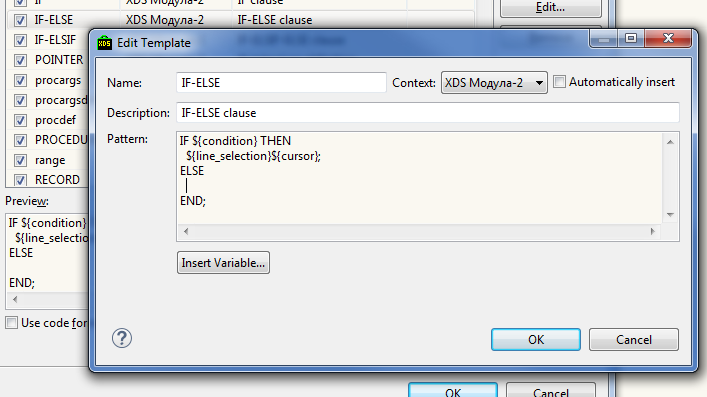
Autocompletion template itself is the text with so called autocompletion variables. IDE replaces these variables in the moment of template insertion, or such variable can modify the editor behavior (demonstrated in the example below).
There is a number of pre-defined autocompletion variables (to see them press Insert Variable... button): ${cursor}, ${date}, $$, ${line_selection}, ${time}, ${user}, ${word_selection}, ${year} .
Each autocompletion variable with the name different from the pre-defined variable name is the edit location (more on this below). When inserting template it is possible to traverse between edit locations using the Tab ¨«¨ Shift + Tab buttons.
Let us consider the ${cursor} variable.
Modify the IF-ELSE template as the following:
IF ${condition} THEN
${line_selection}
ELSE
${cursor};
END;
Press OK, Apply and close the template editor.
Open the Modula-2 editor on some mod-file, go to the procedure body, start typing the if and press Ctrl + Space.
The following window appears:
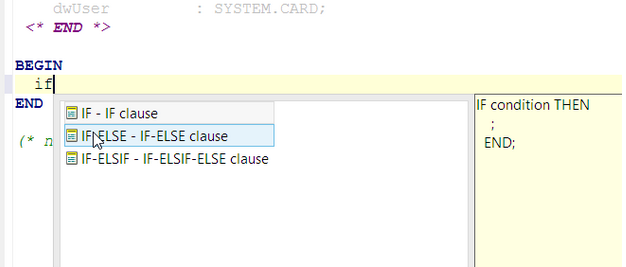
Cursor will be placed near condition, so if type TRUE, condition will be replaced with TRUE.
Try pressing the Tab button - the cursor will traverse between edit locations, in the current example this happens to be lines 17 and 20. Line 20 corresponds to ${cursor} variable edit location.
Remove the inserted text.
Now type i := 0; and select this text:

Press Ctrl + Space and select IF-ELSE in the autocompletion list.
The following text will be inserted:

So the current selection was used as the ${line_selection} variable value. Edit the condition location and press Enter. Cursor will jump to edit location corresponding to the ${cursor} variable. This variable specifies the position where the cursor should be placed after completion of the autocompletion session.
Now edit IF-ELSE template as the following:
IF ${condition} THEN (* ${THEN\_comment} *)
${line_selection}
ELSE (* ${ELSE\_comment} *)
${cursor};
END; (* ${END\_comment} *)
Go to the source code editor and invoke the IF-ELSE template:

Since variables ${THEN_comment}, ${ELSE_comment} and ${END_comment} are not built-in they only specify edit locations. During the autocompletion session it is possible to traverse them using the Tab and Shift + Tab buttons.
Built-in autocompletion variables:
Section XDS Modula-2 > Registered SDKs is used to specify new or edit existing SDKs.
More on SDK setup please see SDK configuration.
At the moment the section XDS Modula-2 > Code style contains only formatting settings.
The section XDS Modula-2 > Code style > Formatter is used to specify source code formatting settings.
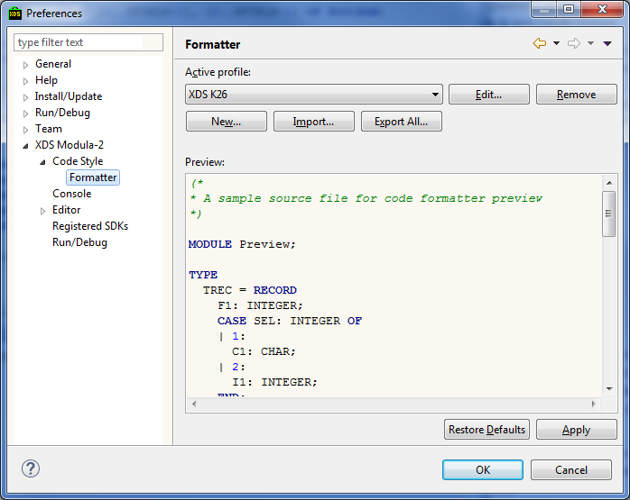
All formattings settings are saved in the formatting profile. Initially built-in formatting profile is used - it is possible to inspect its settings but it is not possible to edit them. Listbox atop allows to activate existing profile. The buttons are as follows:
In the dialog below there is a window Preview allowing to preview formatting on the given source code sample.
Atop of the dialog there is a Export... button allowing export of the profile to the .xml file.
The tabs below specify formatting parameter groups:
Each tab contains Preview window allowing preview effect of the settings being changed.
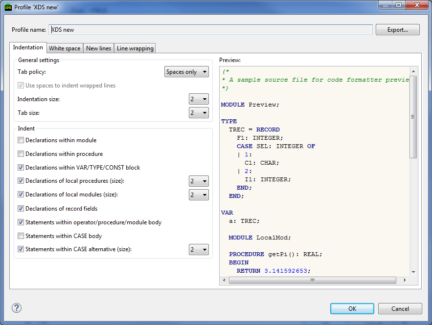
The Indent section allows to override Indentation size for the given elements:
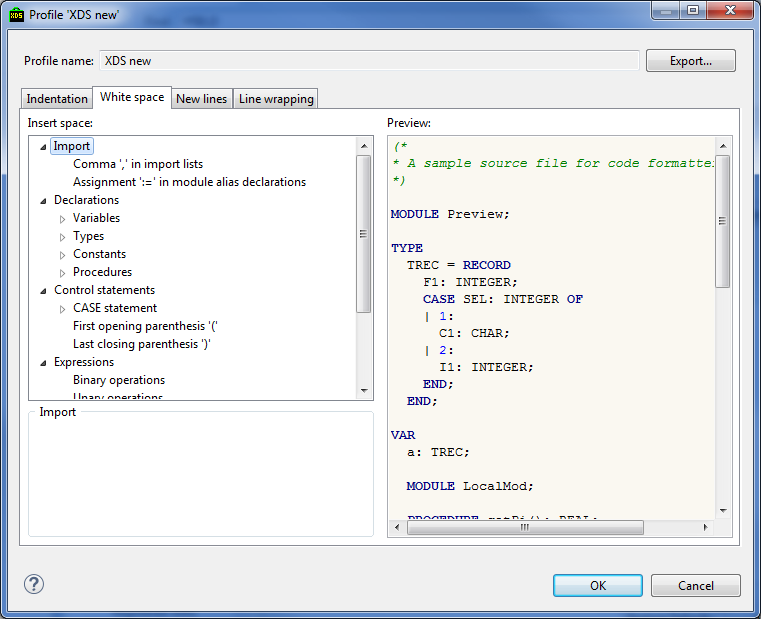
Insert space tree allows to select varios language elements. It is possible to specify for the selected element whether to put space after or before this element.
When two elements are adjacent - space will be inserted if either of them confirm this.

Insert new line tree allows to select varios language elements. It is possible to specify for the selected element whether to put newline after or before this element.
When two elements are adjacent - newline will be inserted if either of them confirm this.
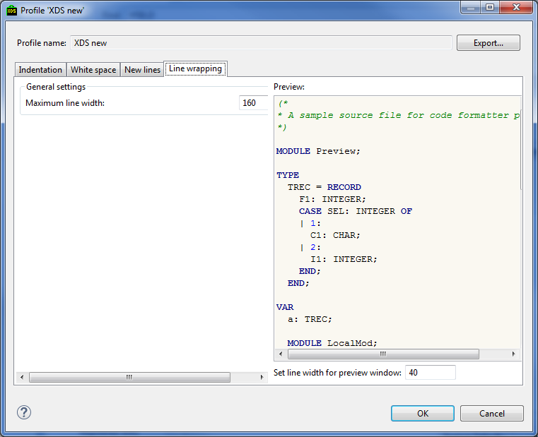
By line wrapping we mean reorganizing long strings in a way that newline or / and whitespace padding is inserted to fit the string in the editor.
One can specify Maximal line width value - position in the string which will be used by the formatter to fit the text in. It is not always possible to do this without broking the program syntax so sometimes strings are extended beyond this border.
Below the preview window the value Set line width for preview window specifies the text wrapping
width in the preview window - by changing this value one can guess how the text will appear after the reorganizing.
General Eclipse platform settings. XDS Modula-2 IDE uses some of them and besides adds some of its own preferences.
Spellchecking preferences can be found in the Preferences dialog at the General > Editors > Text Editors > Spelling page.
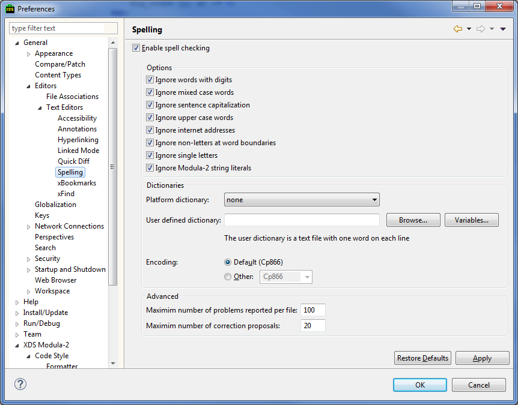
Enable spell checking checkbox allows to turn on the spell checking.
In the combobox below it is possible to select the currently active spell checking service. Here we describe the XDS spell checking settings.
The settings below affect the spell checking:
The section Dictionaries allows to select dictionary among the registered or select the user dictionary – in the later case the specially formatted file is expected. The format is as follows : each line contains the single word. IDE should have the permissions for both reading and writing the file. By selecting the file user should also specify the file encoding.
In the dialog bottom is also possible to set maximum number of errors in the single source file and constrain the maximum count of spelling corrections offered to user.